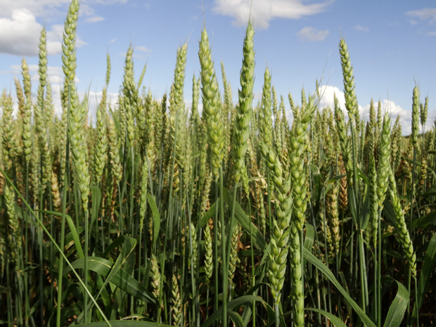

Бамбук золотой - Phyllostachys aurea
1 image

Бамбук зонтичный - Fargesia murieliae
4 images

Вейник x остроцветковый - Calamagrostis x acutiflora
4 images

Гузмания язычковая - Guzmania lingulata
11 images

Ежа сборная - Dactylis glomerata
7 images

Ежовник хлебный, Пайза - Echinochloa frumentacea
4 images

Зайцехвост яйцевидный - Lagurus ovatus
4 images

Ковыль волосовидный, Тырса - Stipa capillata
6 images

Колосняк песчаный - Leymus arenarius
13 images

Кукуруза обыкновенная 'Золотой Бантам' - Zea mays 'Golden Bantam'
7 images

Кукуруза обыкновенная - Zea mays
35 images

Лисохвост луговой - Alopecurus pratensis
2 images

Мискантус сахароцветный - Miscanthus sacchariflorus
6 images

Молиния голубая 'Разнообразная' - Molinia caerulea 'Variegata'
4 images

Мятлик альпийский - Poa alpina
4 images

Мятлик луговой - Poa pratensis
1 image

Мятлик обыкновенный - Poa trivialis
2 images

Овёс посевной, кормовой, обыкновенный - Avena sativa
8 images

Овсяница Эския - Festuca eskia
3 images

Оплисменус коротковолосистый - Oplismenus hirtellus
3 images



Мятликовые - Poaceae